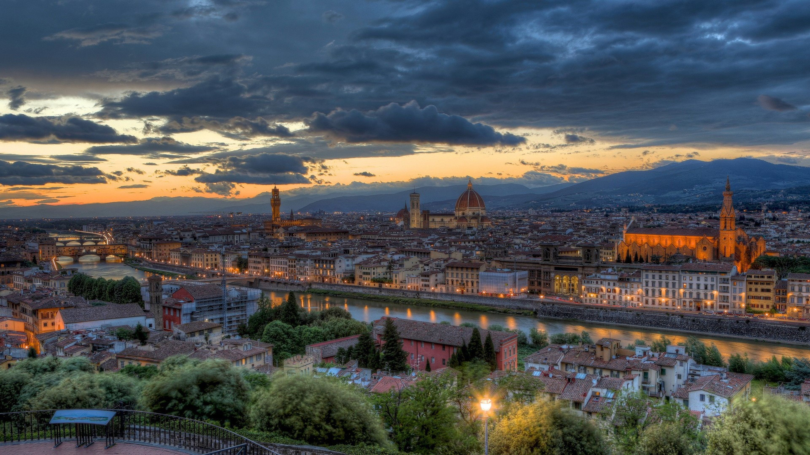

ITALY
Italy, officially known as the Italian Republic, is a country located in Southern Europe. It is a peninsula that extends into the Mediterranean Sea, with a population of approximately 60 million people. Italy is known for its rich history, art, culture, and cuisine. The country has played a significant role in shaping Western civilization, with its influence seen in various fields such as art, architecture, literature, music, and fashion.
HOW TO GET THERE?
To get to Italy from Dubai, you have several options available, including flying, driving, or taking a combination of different modes of transportation. The most common and efficient way to travel from Dubai to Italy is by air.
By Air: The most convenient way to travel from Dubai to Italy is by taking a direct flight. There are several airlines that operate direct flights between Dubai International Airport (DXB) and major Italian cities such as Rome, Milan, Venice, and Florence. The flight duration from Dubai to Italy varies depending on the destination city but typically ranges from 6 to 8 hours.
Flight Options: Some of the major airlines that offer direct flights from Dubai to Italy include Emirates, Etihad Airways, Alitalia, and Qatar Airways. These airlines provide regular scheduled flights with various options for economy, business, and first-class seats.
Connecting Flights: If you cannot find a direct flight to your desired Italian destination, you can opt for connecting flights through major European hubs such as Frankfurt, Paris, London, or Istanbul. This may increase your travel time but can provide more flexibility in terms of flight schedules and destinations within Italy.
Visa Requirements: Before traveling from Dubai to Italy, make sure to check the visa requirements for your nationality. Italy is part of the Schengen Area, so if you hold a Schengen visa or are a citizen of a visa-exempt country, you can enter Italy without a visa for short stays.
Other Transportation Options: If you prefer a more scenic route or want to explore multiple countries along the way, you can consider driving from Dubai to Italy. This option involves crossing multiple borders and requires careful planning regarding visas, road conditions, and travel restrictions.
WHEN TO GO THERE?
You can go to Italy at any time of the year, as there is no specific restriction on when tourists can visit the country. However, the best time to visit Italy depends on your preferences and what you want to experience during your trip.
Weather: Italy has a Mediterranean climate, with mild winters and warm summers. If you prefer warmer weather, the best time to visit is from May to September. During these months, temperatures range from the mid-20s to high 30s Celsius (70s to 100s Fahrenheit). However, this is also the peak tourist season, so accommodations and attractions may be more crowded and expensive.
Shoulder Seasons: If you want to avoid the crowds and still enjoy relatively warm weather, consider visiting Italy in the shoulder seasons of April-May or September-October. During these months, the weather is pleasant, and you can still enjoy outdoor activities without the peak season crowds.
Winter: Winter in Italy, from November to March, can be cold, especially in the northern regions. However, this is also an excellent time to visit if you want to experience the Christmas markets or ski in the Italian Alps. Additionally, during the winter months, you may find better deals on accommodations and attractions, as well as fewer crowds.
Festivals and Events: Italy is known for its numerous festivals and events throughout the year. Some popular events include:
Carnevale (February-March): A colorful and lively festival held in Venice and other Italian cities, featuring costumes, parades, and masquerade balls.
Easter (April): A religious holiday celebrated with processions, music, and traditional food.
Festa della Repubblica (June 2): Italy’s Republic Day, marked by parades and public events.
Ferragosto (August 15): A national holiday where many Italians take a summer break, leading to closed businesses and reduced crowds in tourist areas.
La Notte della Taranta (August): A music and dance festival in Puglia celebrating the local tarantella tradition.
Milan Design Week (September-October): A major international event showcasing the latest in design and fashion.
Christmas Markets (December): Traditional markets held in various Italian cities, featuring festive decorations, food, and gifts.
THINGS TO DO THERE
Italy is a country rich in history, culture, and natural beauty, offering a wide range of activities for visitors to enjoy. From exploring ancient ruins to indulging in world-renowned cuisine, there is something for everyone in Italy. Here are some of the top things to do in Italy:
1. Visit Historical Landmarks: Italy is home to numerous historical landmarks that attract millions of tourists each year. Some of the must-visit sites include the Colosseum in Rome, the Leaning Tower of Pisa, the ruins of Pompeii, and the ancient city of Venice.
2. Explore Art and Culture: Italy is known for its rich artistic heritage, with famous museums and galleries showcasing works by renowned artists such as Leonardo da Vinci, Michelangelo, and Caravaggio. Visitors can explore art galleries, attend opera performances, and visit historic churches and cathedrals.
3. Enjoy Italian Cuisine: Italian cuisine is celebrated worldwide for its delicious flavors and fresh ingredients. Visitors can indulge in authentic pasta dishes, pizzas, gelato, and fine wines while exploring local markets and dining at traditional trattorias.
4. Relax on the Coast: Italy boasts stunning coastlines along the Mediterranean Sea, offering opportunities for sunbathing, swimming, and water sports. Popular coastal destinations include the Amalfi Coast, Cinque Terre, and the island of Sicily.
5. Experience Festivals and Events: Italy hosts a variety of festivals and events throughout the year that showcase the country’s vibrant culture and traditions. From the Venice Carnival to Siena’s Palio horse race, there are plenty of celebrations to experience.
6. Explore Natural Beauty: Italy is blessed with diverse landscapes, including picturesque lakes, rolling vineyards, and majestic mountains. Visitors can hike in the Dolomites, swim in Lake Como, or explore the scenic countryside of Tuscany.
7. Shop for Fashion: Italy is a fashion capital known for its designer boutiques and luxury brands. Visitors can shop for high-end fashion in cities like Milan and Florence or hunt for unique souvenirs at local markets.
8. Attend Cultural Events: Italy offers a vibrant cultural scene with music concerts, theater performances, and film festivals taking place throughout the year. Visitors can immerse themselves in Italian culture by attending live performances and events.
9. Participate in Outdoor Activities: Outdoor enthusiasts will find plenty to do in Italy, from skiing in the Alps to hiking in national parks like Cinque Terre or Gran Paradiso. Cycling tours, sailing trips, and hot air balloon rides are also popular activities.
10. Learn Italian Cooking: Food lovers can take cooking classes to learn how to prepare traditional Italian dishes like pasta, risotto, and tiramisu. Many cooking schools offer hands-on experiences where participants can shop for ingredients at local markets and cook alongside professional chefs.
.png)